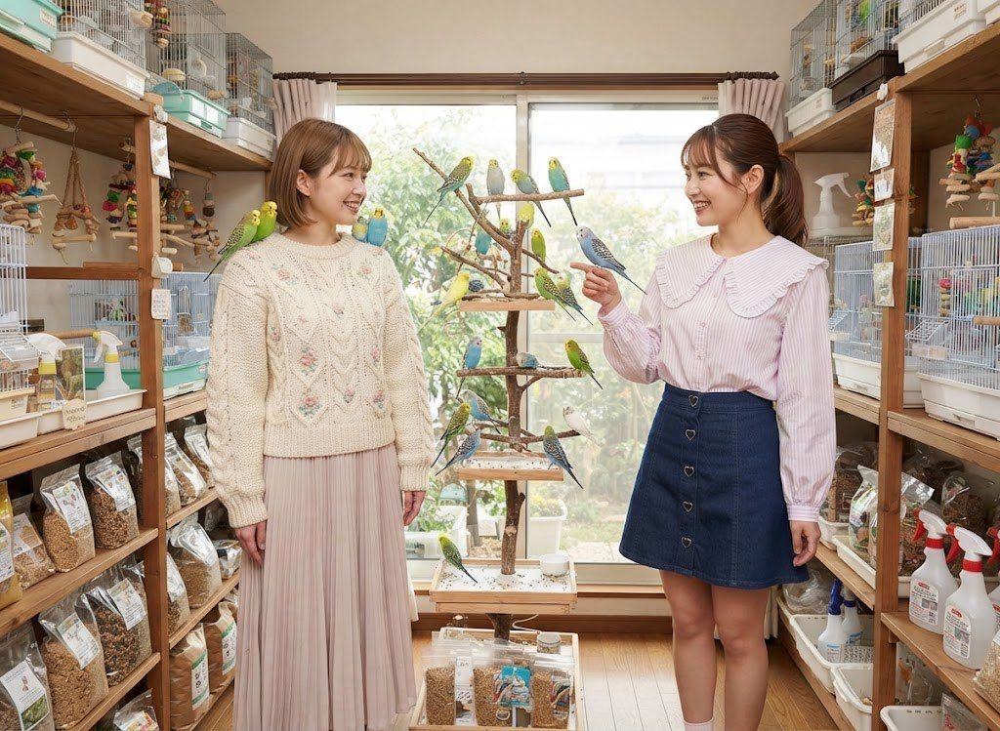
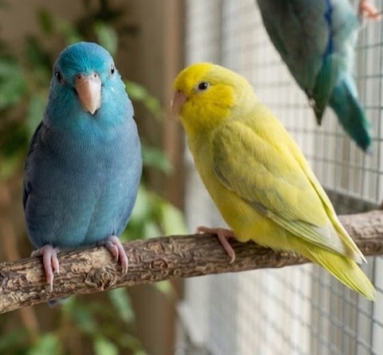
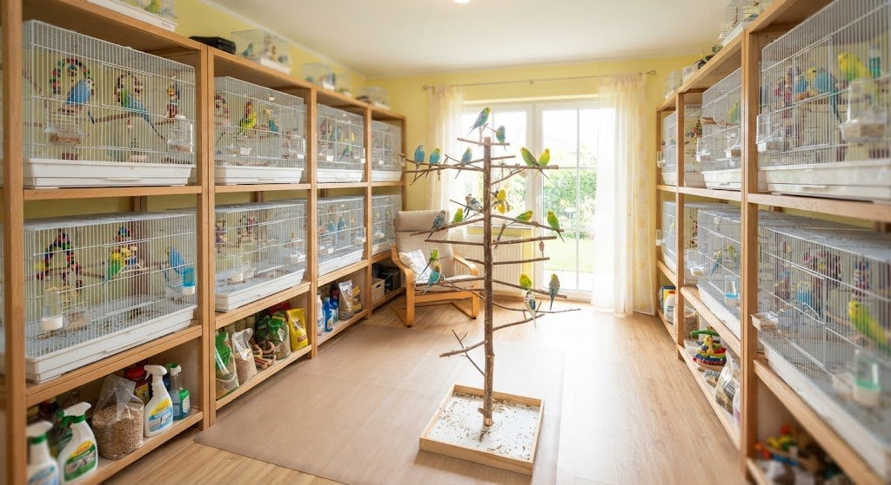
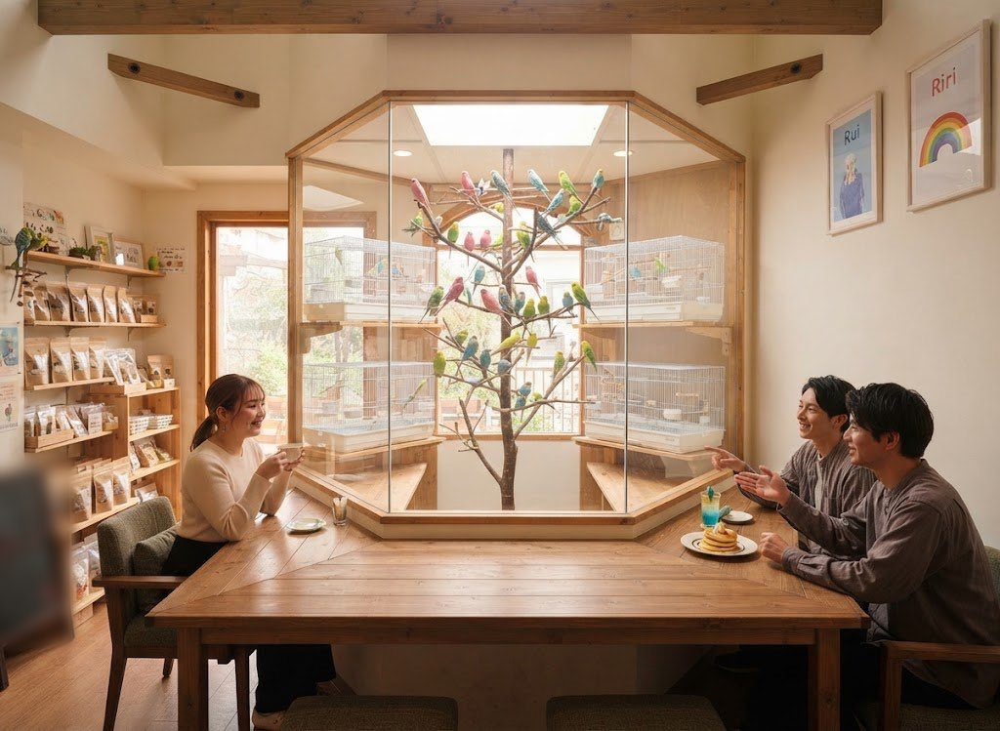
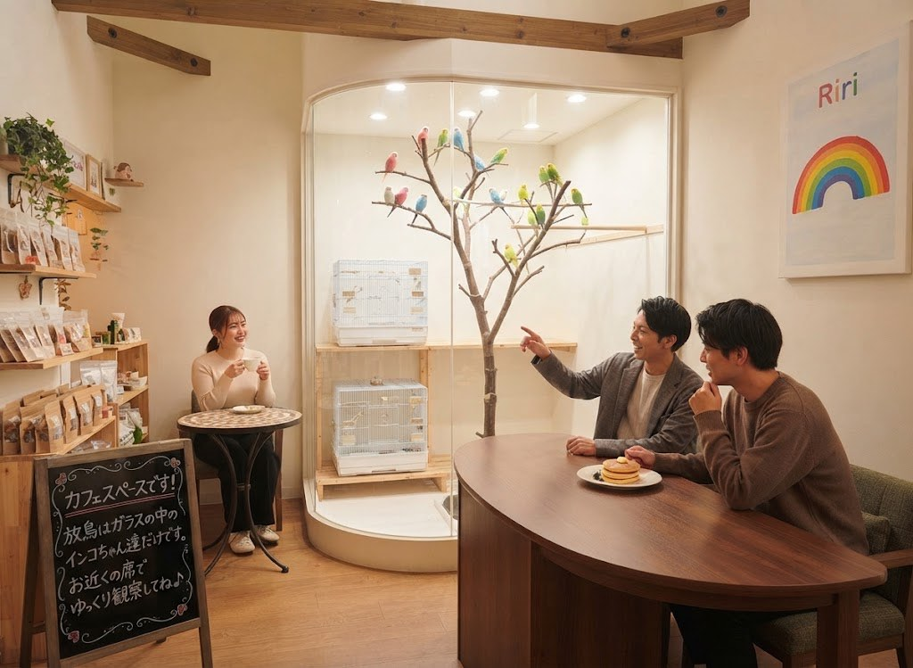
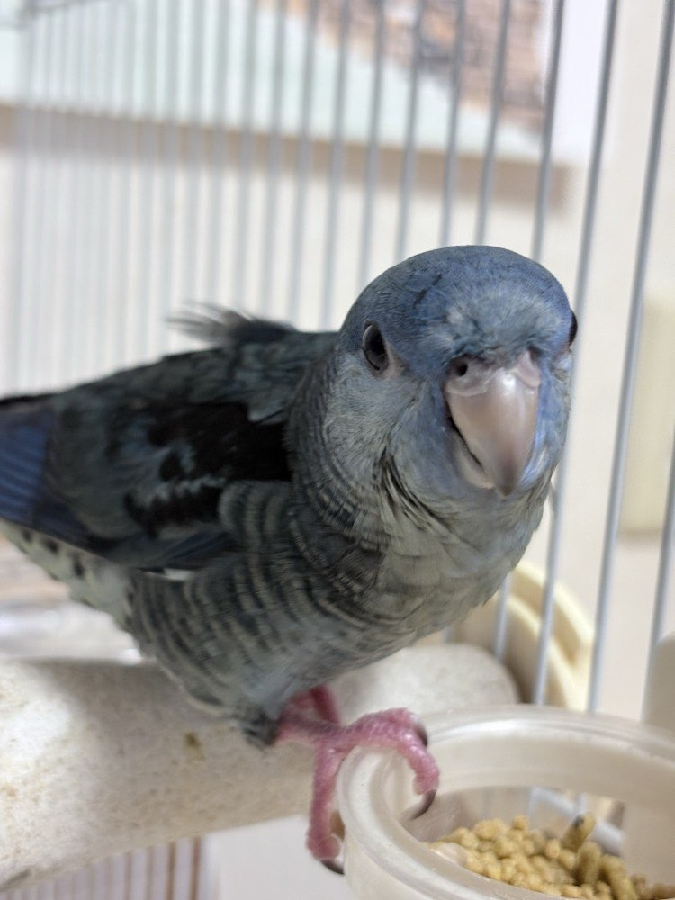
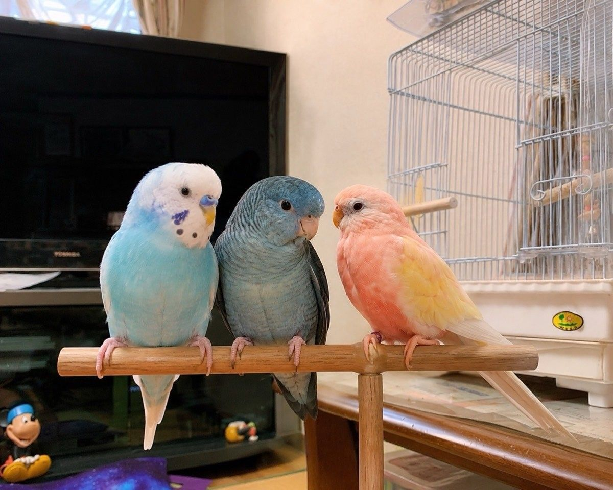
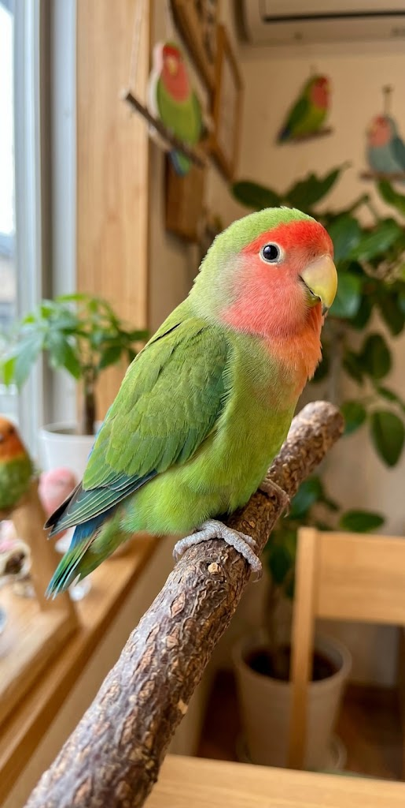
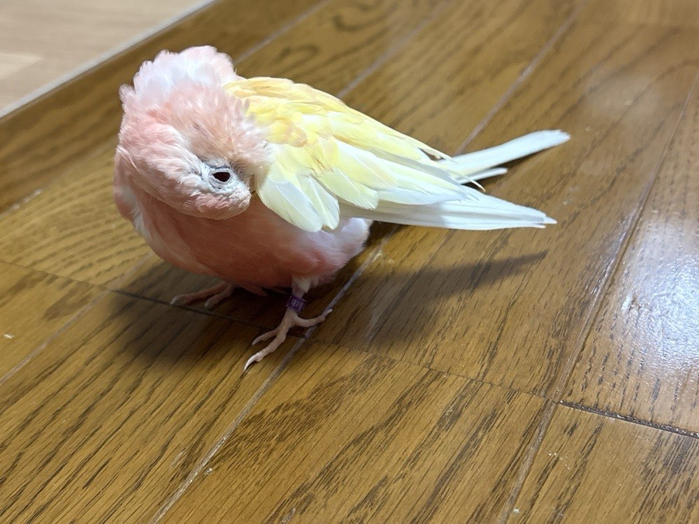
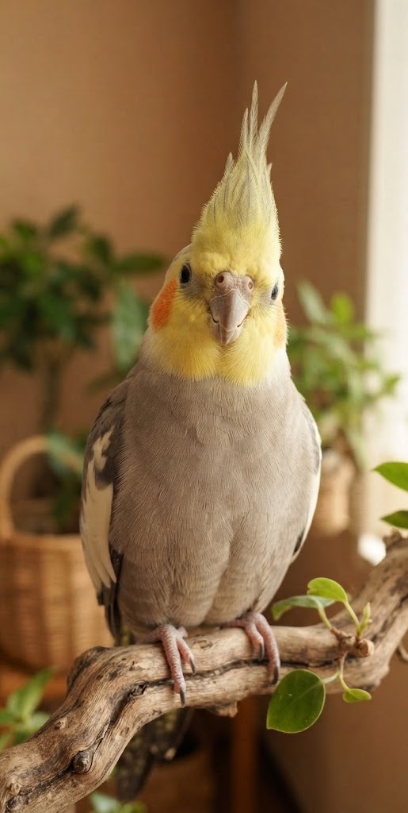

インコ部屋のご紹介
インコたちがのびのび暮らす、
日あたりのいいお部屋。
AKI・るい・りりぃのほかにも、オカメインコのぷりん、コザクラインコのもも、マメルリハのラムネとレモン、なかよしのセキセイインコたちが暮らしています。ふれあいタイムはこのお部屋で。お食事は、ガラス越しにインコたちを眺められるカフェスペースでどうぞ。


お部屋マップ

-
1．大きな止まり木ツリー
お部屋のまんなかにある、インコたちのお気に入りの場所。ここに集まってきたら、ふれあいのチャンス！
-
2．ひとり1部屋のケージ
インコたちが休みたいときに帰れるおうち。ケージの中の子は、そっと見守ってね。
-
3．窓からの自然光
明るい光が入る窓辺は、写真映えのベストポジション。インコたちも日なたぼっこが大好きです。
-
4．ごはん・お掃除グッズ
インコごとに合わせたごはんと、毎日のお掃除グッズをそろえています。
カフェスペース

ガラスの向こうのインコたちを
眺めながら、ひと休み
カフェスペースの真ん中には、ガラス張りの放鳥部屋。止まり木を飛びまわるインコたちを眺めながら、ドリンクやパンケーキを楽しめます。
- お食事・ドリンクはカフェスペースでどうぞ
- インコ部屋への食べものの持ち込みはできません
- ふれあいの前後に、ゆっくり休憩できます

食べる場所と、ふれあう場所を
分けています
人間の食べものは、インコたちの体にとって危険なことも。インコたちが安心して過ごせるように、飲食はカフェスペース、ふれあいはインコ部屋と、場所を分けています。
- ガラス越しなら、フラッシュなしで写真もOK
- 日替わりランチやドリンクだけのご利用もOK
インコ部屋のここが好き

インコたちに囲まれて過ごせる
止まり木ツリーには、いつもたくさんのインコたち。そばで静かに待っていると、肩や手にちょこんと遊びに来てくれることも。
- お部屋の中を自由に見て回れます
- インコたちが来てくれたらラッキー♡
- 写真・動画の撮影もOK（フラッシュなし）


看板インコの3羽にも会える
店長のAKI、新人さんのるい、副店長のりりぃ。性格も色もちがう3羽の、それぞれのかわいさを見つけてね。
- その日のごきげんで、出てくる子が変わります
- スタッフに聞けば、どの子か教えてもらえます


インコのペースで休める
インコたちは、疲れたら自分のケージに戻ってお昼寝タイム。無理にふれあわせることはしません。
- 13:00〜13:30はインコたちのお昼寝タイム（この間もカフェスペースは営業中）
- ケージの中の子は、そっと見守ってね
安心・清潔のための取り組み
-
毎日のお掃除
開店前と閉店後に、お部屋とケージをお掃除・消毒しています。
-
温度と湿度の管理
寒さや乾燥が苦手なインコたちのために、いつも快適な温度に保っています。
-
脱走防止の二重扉
お部屋の入り口は二重扉。インコたちが外に飛び出さないようにしています。
インコ部屋でのお約束
- お部屋に入る前に、手洗いと消毒をお願いします。
- 床にインコがいることがあります。足もとに気をつけて、ゆっくり歩いてね。
- インコを追いかけたり、つかんだりしないでください。
- ピアス・ネックレス・指輪・時計などのアクセサリーは、入室前に外してロッカーへ入れてください（インコがかじると金属中毒の原因になるため）。